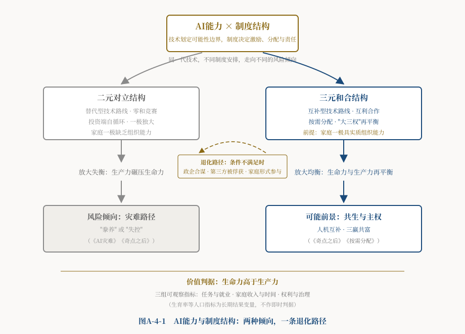

导言：问错了的问题
关于AI的前景，世界正分裂成两个阵营。
悲观派的声音越来越沉重。"AI教父"辛顿辞去谷歌职务，公开表达对毕生研究的悔意；数百位科学家联署声明，把AI的灭绝风险与核战争相提并论；哲学家博斯特罗姆的《超级智能》一版再版，成为焦虑时代的畅销书。[1]乐观派的声音同样响亮：技术革命历来先破后立，蒸汽机消灭了马车夫却创造了司机，互联网冲垮了报纸却造就了亿万内容创作者；世界经济论坛预计，在技术变化、绿色转型、人口结构与宏观经济等多种趋势共同作用下，2025—2030年全球新增岗位总量可能超过被替代岗位[2]。放心，历史站在我们这边。（这里须作一处说明：该预测是多种趋势的合计结果，其中大量净增岗位来自农业、配送、照护与教育等领域，它并不能单独证明AI会净创造就业。本文引用它，是为了呈现乐观派的论据形态，而非背书其归因方式。）
两派已经争了十年，谁也没有说服谁。本栏目第一篇《AI灾难》开头的三个场景——旧金山街头砸机器人的工人、送孩子上补习班时突然茫然的北京父亲、破例出席G7峰会的教皇——他们的愤怒、困惑与警告，至今没有得到一个能安放的答案。
本文的看法是：这场争论争不出结果，因为双方共享着同一个错误前提——把AI的前景当作AI技术本身的属性。悲观派说AI危险，乐观派说AI造福，仿佛天堂或地狱是预先写在算法里的，人类只需猜对谜底。
其实不是——但也不能走到另一个极端。回顾历史，火药既造出了烟花也造出了炮弹，核能既点亮了城市也毁灭了城市，互联网既传播了知识也传播了谣言：技术的后果从来不由技术单独决定。可是反过来说"后果完全由制度决定"，同样不成立——火药、核能与AI的物理能力和风险边界各不相同，技术自身的能力、成本与设计，也会反过来重塑权力分配与制度的可选空间。技术能力划定可能性的边界，制度结构决定哪些用途获得激励、收益如何分配、风险由谁承担。AI之所以值得单独讨论，是因为它同时具备两重身份：它凭借通用性、扩散速度与对认知任务的广泛覆盖，可能产生远比以往技术广泛的制度反馈，也是少数几种能够改写自身所处制度环境的技术之一。
放大器本身不生产声音，它只是把输进来的声音放大——输入音乐，放出的是更响的音乐；输入噪音，放出的是更响的噪音。AI正是这样一部前所未有的放大器，只不过它放大的不是声音，而是制度结构。
由此得到本文的核心命题：AI的未来走向，取决于技术进步与制度创新的双向塑造。一方面，技术进步是生产力发展的引擎，它会冲击并重置既有的制度安排；另一方面，制度是规制技术发展方向的规则，它决定哪些技术用途获得激励、收益如何分配、风险由谁承担，从而反过来塑造技术演进的路径。用一句话概括这层双向塑造：技术进步推动制度创新，制度创新规制技术进步，其共同的目标应当是使技术为人类利益服务——生命力高于生产力。
在这个意义上，AI首先是一部放大器：它把既有制度结构连同其中的公正与偏私一起放大。把它嵌入二元对立结构，容易导向人机替代、零和竞赛、大资本自我闭环，放大的是本栏目《AI灾难》所诊断的种种风险；把它嵌入三元和合结构，则更有可能促成人机互补、互利合作与三方共赢。但AI又不止是放大器——它凭借自身的能力与成本改变制度可以选择的范围，因此也是制度结构的改变者。天堂或地狱都不是AI技术的固有属性，但也不是制度结构可以单方面决定的结果：它是技术进步与制度创新在特定条件下相互作用的产物。本文之所以把重心放在制度一侧，不是因为技术能力不重要，而是因为它是当前讨论中最常被忽略、也最可能被人类主动选择的那一部分。
这个双向塑造，有历史先例可循。工业革命的历程表明：技术进步推动生产力发展，生产力发展引起家庭、企业、政府三方组织形态与职能的变革，由此催生制度创新——工厂制度催生了现代企业与劳资关系，城市化与人口转变重塑了家庭，公共卫生、义务教育、社会保险则重塑了政府职能。在合三为一政治经济学的分析框架中，现代社会制度的外在表现，是家庭、企业、政府三大系统的组织形态及其职能；其核心结构，是家庭权利、企业权利、政府权力"大三权"的配置及非对称制衡方式。须说明，这是本文为分析AI治理所作的理论建模，并不主张穷尽制度的全部含义——法律、习俗、规范、执行机制等同样是制度的组成部分。就本文讨论的AI治理而言，制度一方面规范三类主体的行为，另一方面通过产权、激励、责任与治理规则，影响技术发展的方向及其利益分配。须补一句以免误读：这是对历史机制的概括，不是说技术单向决定制度——三方博弈的具体结果、各国路径的巨大差异，恰恰说明制度创新是能动的政治过程，而非技术的自动产物。
AI革命正在加速生产力变迁，并可能通过就业、数据、资本、算法与治理等渠道，显著改变家庭权利、企业权利、政府权力的既有配置，迫使制度作出回应。但回应的方向并不唯一：它既可能表现为适应性的制度创新，也可能表现为制度迟滞、权力集中，或既有失衡结构的进一步固化——究竟走向哪一种，取决于三方博弈的实际态势，而非技术自动决定。这场变革的力度可能远超工业革命；正因如此，能否让制度回应落到"创新"而非"退化"的一侧，才格外攸关。而制度创新一旦发生，其宗旨应当不变：规制AI技术的发展方向，使之为人类利益服务。而在没有世界政府的条件下，一国制度的构建在家庭、企业、政府三方博弈中实现，全球制度与技术的走向则受到地缘政治与国际竞争的强烈塑造（跨国企业、科研共同体与标准制定组织也在其中发挥实际作用）——这两个层次——国内的三方博弈与全球的地缘竞争——正是本文第二部分"三个回答"要落到的治理场域。
这是本站AI系列的收束篇。《AI灾难》诊断了危险，《奇点之后》追问了人的位置，《按需分配》设计了分配方案；本篇用《和合主义》一文的三个哲学命题统摄全局，回答最后一个问题：AI革命的前景取决于什么，以及，我们凭什么还有的选。
一、放大什么：AI对"三种生产"与"大三权"的结构冲击
先做一个结构扫描。AI冲击的不是某个行业、某类岗位，而是同时冲击构成人类社会的三种生产、三种最基本的有组织力量——家庭、企业、政府。并且，这是本部分要说清的关键：它把这三个系统中每一处既有的失衡，都放大了。
先看企业系统：利润最大化的逻辑被推向极端。
追求利润本是企业的天性，也是三元结构中正常的一极——正是这个动机推动了技术进步和财富增长。但AI把这一极放大到了前所未有的程度。资本形态正在跃迁为"算力—算法资本"：瑞典金融科技公司Klarna曾宣布，其AI助手处理的服务量"相当于七百余名全职客服的工作量"[3]；英伟达靠卖AI芯片，市值一度冲上约3.6万亿美元，登顶全球[4]。
Klarna这个案例值得完整讲完，因为后半段比前半段更有意思：此后该公司承认，过度以成本为导向可能损害服务质量与客户体验，转而重新强化人工服务，尤其用于处理复杂与高价值的问题[3]。同一家公司、同一项技术，先被用于成本驱动的纯替代，随后转向分层的人机互补——这是一次难得的自然实验，本文后面关于"替代还是互补取决于制度与激励"的论证，将回到这个案例。
至于这类资本为何趋向集中，需要比"复制成本为零"更准确的说法：算法与数字产品确实具有低复制成本、强规模经济与网络效应；但算力、能源、高质量数据与先进芯片始终是稀缺投入——每一次模型推理都实实在在消耗芯片、电力、冷却与网络容量，数据则受隐私、版权与采集成本的约束。正是"数字层面的可复制性"与"物理层面的瓶颈"这一组合，使得谁掌握稀缺算力、谁就掌握放大器的开关，市场集中因此可能加剧。《按需分配》把由此形成的新分配格局命名为"按算分配"。
更要紧的是《AI灾难》识别出的那个结构节点："大资本自我闭环"，这里需要作一处更精确的界定。AI巨头的利润大量回流到算力采购和模型训练，形成由企业间中间需求支撑的投资循环。这一循环可能在一定时期内弱化家庭最终消费对生产扩张的即时约束，却不能永久脱离最终需求和现金流验证——投资终究要靠未来的产品销售、租金或现金流兑现，融资者的耐心也有限度；这类投资端自循环在经济史上也并非首次出现。问题不在于生产已经不再需要消费，而在于中间消费的扩张可能掩盖最终消费的不足，并把总需求结构进一步推向企业投资端。这样的结构可以维持相当长的时间——长到足以让分配失衡固化、让家庭一极的萎缩被亮眼的账面数字所遮蔽。这才是真正值得警惕之处。
再看家庭系统：工资通道萎缩，意义随之动摇。
市场经济给普通家庭安排的位置，是用劳动换工资、用工资养家糊口、养育后代。这个安排的前提是劳动有人买。AI同时替代体力劳动和脑力劳动之后，劳动力这份产权还在每个人手里，可它越来越卖不出价——《奇点之后》把这称作"比奴隶制更隐蔽的架空"：奴隶制夺走的是劳动力的所有权，AI架空的是劳动力的市场价值。
冲击顺着链条向下传导：就业不稳，收入下降，消费降级，并可能通过预期渠道影响婚育意愿。这里必须谨慎：中国出生人口自2016年高位持续下行、韩国总和生育率处于全球最低水平之一，都是事实，但低生育趋势的出现早于本轮生成式AI浪潮，住房与教育成本、婚育观念、性别分工、就业不确定性等因素都在其中起作用——现有出生率数据本身不能识别AI的独立影响[5]。本文能够主张的是一个机制性判断：如果AI显著加大青年就业与收入的不确定性，它可能通过预期渠道叠加在既有的下行趋势之上。那位北京父亲的问题——我培养的孩子，将来靠什么立足——正是这种预期渠道的日常形态。当劳动无法证明人的价值，"人生的意义是什么"就不再是哲学课上的思辨，而是每个普通家庭必须直面的生存现实。家庭本来就是三方中最弱的一极，AI把这个弱势放大成了系统性的退场。
最后看政府系统：监管追不上，税基也在流失。
政府监管能力落后于AI的速度，已是共识——自动化交易系统在微秒级完成决策，其运行节奏远快于监管机构的响应周期（这类系统本身未必是AI，但AI会进一步拉大这种速度落差）；《奇点之后》的判断是"速度即权力"：制衡不是被推翻，而是被绕过。
但还有一个讨论得少的冲击：税源结构可能被重新洗牌。须先纠正一个流行的简化说法：现代政府的财政并非只靠劳动税基（个人所得税与社保缴费），增值税与销售税、消费税、财产税、资源税在不同国家占比各异；AI的利润也不是可以随意腾挪的无形之物——算力基础设施有明确的物理位置，反而比许多传统资产更易定位。较准确的判断是：AI与自动化可能改变劳动所得税、社保缴费、企业利润税与消费税之间的结构比例；数字化商业模式也增加了跨境利润归属与征税权配置的难度。影响的方向与程度，因各国税制、就业效应与国际税收规则而异。
即便如此，一个方向性的风险值得警示：如果劳动税基与社保缴费基础持续收缩，而新的税源未能及时建立，政府生产公共产品的财政基础就会被侵蚀——不是被夺权，而是被逐步"断粮"。这是需要防范的可能情形，而不是已经普遍发生的事实。它也从另一个方向解释了《按需分配》为什么讨论算力税一类工具：那不只关乎分配正义，也关乎政府履行职能的物质基础。
三个系统合起来看，可以得出本部分的结论：在当前的默认制度设置下，AI存在把"大三权"推向二元化收缩的现实风险。须强调"默认设置"四字：这不是技术的宿命，而是既有激励结构未经调整时的倾向。
坍缩有两个方向。一个方向是科技资本独大：算法巨头富可敌国，家庭退场，政府空转，社会只剩下"资本对众人"的二元格局——这是硅谷式的前景。另一个方向是政府以安全和竞争之名全面接管：企业创新窒息，家庭权利让渡，社会只剩下"权力对众人"的二元格局。两个方向看似相反，结构其实相同：都是三足鼎立退化为一极独大。而《和合主义》的命题三已经论证过：当三个主体具有相对独立的利益、实际的参与能力与必要的制衡机制时，三元结构比被构造成相互排斥的二元结构，更能增加调节冲突、形成联盟与产生制度创新的可能；反过来，一旦结构被压成相互排斥的两极、第三方失去独立性，纠偏与生成的空间就随之消失——《AI灾难》里的种种剧情，最容易在这种坍缩后的二元格局中上演。
国际层面是同一逻辑的放大版。全球市场经济本来就没有世界政府，缺少制衡结构（详见本站基础理论栏目《曼昆〈经济学原理〉的三大缺陷·下篇》），AI军备竞赛的囚徒困境把它推向极端。《AI灾难》记录过那封意味深长的公开信：2023年三万余人联署，呼吁暂停训练比GPT-4更强的系统六个月[6]。结果是：公开信没有促成任何行业性暂停；与此同时，包括签署者马斯克在内的多名产业参与者继续投入模型竞赛（马斯克本人随后创办了自己的AI公司）。这不能推及全部签署者——其中有大量学者与社会人士，他们并无产业利益——但它足以说明一件事：单个行动者缺乏单边减速的激励。每家公司都怕单独踩刹车会被对手超车，每个国家都怕单独设限会输掉地缘竞争。美中对抗的二元叙事一旦垄断议程，全球AI治理就被锁死在零和框架里，明知集体减速对人类更好，谁也不敢先松油门。
这里要补一个容易被"冲击"一词遮蔽的前提：家庭、企业、政府并不是被动挨打的靶子。它们同时是能动的制度主体——在AI冲击面前，三方一直在博弈、结盟、立规，主动争夺权利、收益与责任的重新配置。前面讲"冲击"，是为了看清压力从何而来；接下来讲"回答"，则是看这三个主体如何回应压力、重塑结构。诊断到此为止。二元结构的病理，《AI灾难》和《奇点之后》已经写透；本篇接下来的任务，是回答另一半问题：三元和合结构长什么样，凭什么可行。
二、和合主义的三个回答
《和合主义》一文给出了三个哲学命题：差异是存在与创造的前提；和合是矛盾解决的常态方式，斗争是代价巨大的极端方式；在三方各具独立性、参与能力与制衡机制的条件下，三元结构比被构造成相互排斥的二元结构，更能容纳调节、联盟与制度创新。三个命题应用于AI，恰好回答三个问题：人机是什么关系？转型走什么路？治理靠什么结构？
1、第一个回答：人机关系是互补，不是替代——关键在制度如何定价
"AI会不会取代人？"——这个最流行的问题，本身就是二元对立思维的产物：它默认人与AI在同一条赛道上一决高下。若真如此，结论只能是绝望的——在算力、速度、记忆容量、复制能力这些赛道上，血肉之躯不可能跑赢硅基系统，就像人不可能跑赢汽车。
和合主义换一个出发点看问题：人与AI是两种异质的智能，差异不是威胁，恰恰是互补的条件。AI擅长的，是一切可以变成规则和数据的事情——模式识别、逻辑推演、优化计算、不知疲倦的执行；人擅长的，恰恰是难以变成规则的事情——《奇点之后》归纳为具身感知、情感联结、道德直觉、创造性跃迁，并统称为"意义力"。两千八百年前史伯就讲过这个道理："以他平他谓之和"——不同的东西相互配合调剂，才能生成新的东西；"以同裨同"——相同的东西自我叠加，走到头就是枯竭。让人去和AI拼算力，或者幻想AI获得人的血肉与情感，都是在"以同裨同"的死路上打转；人机各展所长的组合，才是"以他平他"的活路。
但话不能说到这里就停下，否则它只是一句廉价的安慰。问题的要害在于："替代"还是"互补"，在技术上往往只是同一种能力的两种产品形态，选择哪种形态的，不是技术，而是经济账。同样的自动驾驶能力，可以做成取代司机的无人车，也可以做成辅助司机的智能驾驶；同样的医疗大模型，可以做成替代医生的诊断机，也可以做成供医生参考的"第二意见"；同样的客服AI，可以裁掉整个客服部门，也可以让每个客服人员的服务能力翻十倍。微软把自己的一系列AI产品命名为Copilot（副驾驶）而非Autopilot（自动驾驶）——这个命名或可读作一种"增强而非替代"的路线取向（须说明，命名是市场传播选择，不等于产品实际效应，此处仅作象征性解读[7]）。
企业最终选哪条路线，不看情怀，看成本：在雇人要缴高额社保、用机器却近乎免税的制度环境里，企业理性会倾向于选替代——企业不是恶，是会算账。反过来，《按需分配》讨论的算力税与AI替代税，作用正是改变这本账。
但这类工具的效果只是政策假说，不是确定结论，必须同时讲清它的副作用：按算力投入征税可能误伤有益的自动化，可能促使企业更换名目或把算力迁往境外，可能难以区分替代型与增强型用途，也可能把税负转嫁给消费者或劳动者。更稳妥的方向或许是对超额租金、利润或可观测的外部性征税，同时补贴人机互补的应用与劳动者培训——让互补变得划算，往往比让替代变得昂贵更有效。Klarna的案例在此再次提供了佐证：促使它回补人工的不是税收，而是服务质量与客户体验的市场反馈；制度设计若能让这类反馈更快、更有力地作用于企业决策，效果未必逊于直接征税。经济学家阿西莫格鲁和约翰逊考察了上千年的技术史，结论与此相通：技术进步的方向并非纯由技术自身注定，社会选择在其中起着实质作用。[8]需要把话说完整——这不等于"制度单方面决定技术"：技术能力划定可行性的边界（做不到的事，再好的激励也变不出来），制度结构则在这一边界内影响激励、分配与责任；技术应用的实际路径，是两者相互塑造的结果。就人机关系而言，这层互动的落点是：制度并不阻止技术进步，而是通过定价、产权与责任规则，调整它的方向，使"增强人"比"替代人"更划算——而增强路线一旦铺开，又会催生新的岗位、技能与数据关系，反过来改变下一轮制度安排的起点。一句话：和而不同的人机关系，不靠祈祷，靠技术与制度的持续互动。
2、第二个回答：用和合调节消化转型，不能等危机来强制再平衡
历史上每一次技术大变革，都有两种消化方式。
一种是冲突加危机：机器被砸，失业蔓延，萧条爆发，社会以巨大的破坏强制"出清"，然后在废墟上重建平衡。工业革命走的就是这条路——从卢德工人砸毁织布机，到宪章运动、大罢工、大萧条，整整一个世纪的动荡之后，人类才靠劳工立法、社会保障、凯恩斯主义和福利国家，找到了新的均衡点。
另一种是制度调节：不等矛盾激化成危机，主动改造分配和保障制度，把再平衡的代价降到最低。这就是和合的方式。
《AI灾难》的结论是：AI留给人类的时间，远少于一个世纪——技术迭代以月计，而人的职业转型以年计、人口再生产以二十年计。这意味着，如果这一次还等危机来强制再平衡，等来的可能不是再平衡，而是《奇点之后》推演的"豢养"或"失控"结局。因此本文主张：和合式的主动调节，是比"等危机后再补救"代价更低的优先路径。这不是说它是唯一路径——监管节奏调整、技术安全工程、竞争政策、社会保险改革等也可能组合发挥作用——但在时间窗口收窄的条件下，把希望寄托于事后补救，风险最大。
好在工具箱并不空。本站各篇已经备好了大半，这里做一个系统的集成，再补充一件新工具。
先作一项方法上的说明：下列工具并非由和合主义的三条哲学命题唯一演绎而来。算力税、主权财富基金、公共投资、工时缩短、数据分红等主张，同样可以从社会民主主义、公共经济学的外部性理论、租金分享理论或能力方法推出——这不是本文的弱点，而是这些工具具有多重理论支撑的证据。和合主义提供的，是选择与评价政策的结构标准：一项政策是否增强了最弱一极的实质能力？是否维持三方相互制衡而非某一极独大？是否把零和结构改造为合作可自我维持的结构？哲学框架的作用是给出判据，而不是充当政策计算公式。
第一件：矫正"按算分配"。《按需分配》提出的六项举措——给居民家庭直接发钱、设立主权财富基金推进全民持股、开征算力税与AI替代税、在公共领域开辟新工作场域、扶持AI催生的新就业形态、国家参股核心AI公司——合起来看，本质是一件事：初次分配已经被"按算分配"扭曲，就用"按力分配"的杠杆，把在算力端空转的红利导回家庭系统，让钱重新流经千家万户。
第二件：扩大对生命力领域的公共投资。《曼昆〈经济学原理〉的三大缺陷·中篇》论证过，公共能力能够提升未来生产能力、税基和国家信用，因而可被比喻为国债的"隐形之锚"；但它不是国债的法定抵押物，也不是可直接推算发债规模的会计依据。这里必须把两件常被混淆的事分开：国债融资不等于货币发行——只有当央行购入国债、实行货币化，或银行体系据此扩张信用时，才涉及货币创造；财政空间也不会因技术进步而自动打开，它仍然受利率水平、债务存量、资源闲置程度、供给瓶颈与市场信心的约束。AI提高生产率也不必然压低总体物价：它同时会带来能源、芯片与数据中心的新增需求。
可以稳妥主张的是：如果AI提高了潜在产出、且经济中存在闲置资源，那么政府扩大教育、医疗、照护与再培训投资的实际资源约束可能有所缓解。至于具体的融资方式（税收、发债还是其他）、通胀影响与债务可持续性，须按各国具体经济条件判断，本文不作统一处方。用一句朴素的话概括这层意思：机器把东西越做越便宜的时代，社会有条件把更多资源投向人本身——但"有条件"不等于"无代价"，账仍然要一笔一笔算。
第三件：工时革命与终身教育。凯恩斯1930年曾预言，技术进步将使他孙辈一代每周只需工作十五个小时。[9]生产率的增长兑现了，工时的缩短却没有——红利去了哪里，不言自明。缩短工时，是把AI红利以时间的形态分给劳动者；终身教育，则是把人力资本的更新从"二十年一次性投资"改为"终身滚动升级"，直接缓解《AI灾难》诊断的那个致命时间差——技术五年一迭代，人才二十年一茬。
第四件是新工具：数据产权的公私和合。这是既有各篇尚未展开、而可以依据和合主义的结构标准加以论证和评价的一环。想一想：你的每一次点击、每一条评论、每一段行车轨迹，单独看一文不值；可亿万人的数据聚合起来训练模型，就价值连城。这笔价值该归谁？数据这种新型生产要素，具有公私两栖的性质——单条数据连着个人的隐私与人格，聚合数据的价值却来自亿万人的共同行为。这里需要一处限定：聚合数据往往具有非竞争性、强外部性与规模收益，但它的排他程度取决于平台控制与法律安排，因此并非天然的纯公共产品——它更像一种可以通过技术与法律高度排他化的准公共资源。
平台独占（纯私有）与政府独占（纯国有）都是二元思维的老路；和合主义的方案是把产权的各项权能拆开重组：个人保有数据的人格权与携带权，平台通过付费获得开发使用权，社会保有聚合数据的收益分享权——数据分红注入主权财富基金，正好为《按需分配》的全民持股方案提供源头活水。
现有制度提供了权能拆分的先例，但须准确区分：欧盟《通用数据保护条例》（GDPR）第20条确立了特定条件下的个人数据携带权；欧盟《数据法案》则扩大了联网产品用户对设备生成数据的访问与分享能力，并处理云服务切换等问题[10]。两者都表明数据控制权可以被拆分和重新配置，但都尚未确立本文所主张的"社会对聚合数据享有收益分享权"——那是本文提出的方向，不是欧盟的既有实践。而这一切的法理总根据，《按需分配》已经给出：AI汇聚的是全人类数千年积累的知识遗产，它的红利本就应当以某种形式回馈全人类。
3、第三个回答：把AI放回三元制衡结构，不让任何一极独大
国内层面，AI治理的实质是"大三权"的再配置——三方各有必须补齐的权项，缺一不可。
家庭一侧要补的是权利。算法对普通人的影响无处不在——推送什么信息、给不给贷款、接不接得到订单——所以要有算法知情权和解释权（算法凭什么这样对我，平台必须说得清）、数据携带权（我的数据我能带走）；还有一项工业时代经验的升级版：劳动者面对算法管理的集体谈判权。外卖骑手被配送算法逼得在车流里狂奔，这几年已是全社会关注的现象[11]——骑手与平台就算法参数讨价还价，正是新时代的劳资谈判，需要制度为它撑腰。
企业一侧要保的是活力。和合主义要矫正的是资本脱离循环的自我空转，不是资本本身——差异是创造之源，企业的创新动力必须保留。监管沙盒、分级分类监管，避免以安全之名把创造力管死，防止结构向"政府独大"的另一极坍缩。
政府一侧要守的是底线与制衡。这里须修正一个不切实际的期待：政府不可能"价值中立"——它既是规则制定者，也是公共产品生产者、大宗采购者、数据持有者与安全行动者，本身就是利益攸关方。可行的要求不是中立，而是守底线、受制衡、程序公开。底线是两条：前沿模型的安全评估，关键基础设施保留人类的最终控制权；制衡则包括反垄断——在满足必要性与比例性要求，并保护隐私、安全和商业秘密的前提下，对构成关键基础设施或市场瓶颈的算力与数据接口规定互操作或开放义务，防止赢者通吃固化为永久垄断——以及对政府自身权力的约束。《按需分配》文末那个反方审稿问题必须始终高悬：国家参股AI公司，会不会变成政府与巨头的合谋？
答案只能是结构性的，而且必须坦率承认它的条件性。按《和合主义》已确立的条件命题，三元结构并不自动优于二元结构。落到AI治理上：只有当家庭一极具有真实的组织能力、政府未被企业俘获、企业保有创新自主、数据与算法的边界可识别、纠偏规则可执行时，三元治理才可能优于二元格局。条件不满足时，三元结构会以更隐蔽的方式退化——最典型的形态是政府与巨头合谋，而以"公众参与""用户代表"作装饰，家庭一极徒有形式而无实质。这正是本文主张"给最弱的一极装上结构性支撑"的原因：缺了那一足，参股就真有变成合谋的危险。
国际层面，和合主义反对把AI全球格局简化成美中对抗的二元叙事。这种叙事是自我实现的预言：它把欧盟的规则能力、全球南方的市场与数据、跨国科学共同体的合作网络，统统挤压成两极的附庸，把治理锁死在军备竞赛里。多极和合的路径，《按需分配》已经给出参照——防核扩散条约的历史表明，即使在最尖锐的地缘对抗中，人类也可能在共同生存威胁面前形成有限的底线规则。但这个类比有明确边界，不能照搬：核材料的扩散门槛高、可核查性强、军民用途相对可分、参与主体有限；AI则扩散门槛低、能力散布于开源与商业生态之中、军民两用难以切割、可验证性远为困难。NPT提供的是"尖锐竞争中仍可能达成有限共识"这一历史事实，而不是一套可以移植的技术方案。在此前提下，可行的路径是：先在底线问题上凝聚最低共识——AI不得自主决策大规模杀伤，人类保有最终控制权；再逐步扩展到AI安全评估体系、事故通报机制、开源基础模型的公共资助——这些都是没有世界政府的条件下可以供给的国际公共产品。本站《曼昆〈经济学原理〉的三大缺陷·下篇》提出，国际公共产品主要通过国际合作、霸权国有意供给以及国家自利行为的正负外溢三种机制形成；那么，与其幻想大国突然利他，不如让"向世界提供AI公共产品"成为大国竞争声誉与领导权的新赛道——把零和竞赛改造成正和竞赛，这本身就是和合的功夫。
最后还有一层，《奇点之后》已经写下，值得在此点亮——须先声明，这属于远期的思想实验与情景推演，而非对当前系统的描述：现有AI模型尚不构成独立的政治经济主体。如果AI最终发展成独立的行为主体——那篇文章所说的"大四权"情景——人类的家庭、企业、政府三方，将有史以来第一次面对一个共同的"他者"。这恰恰给了三方超越内部博弈、走向合作的最强动力。和合主义在AI时代的终极含义可能是：人类的"合三为一"，从一个关于效率与公平的问题，升格为文明自我保存的必要条件。
三、前景推演：两条路径，一个判据
现在可以把核心命题展开成推演了。既然AI的走向取决于技术进步与制度创新的双向塑造，那么在技术能力大体相近时，不同的制度回应可能使AI走上不同的路径；而此后的技术演化，又会反过来改变制度可选择的条件。下面推演的两条路径，因此不是"技术相同、制度决定一切"，而是两组"技术—制度"组合在时间中相互塑造的不同轨迹。
二元路径：替代型技术路线，加"按算分配"，加治理缺位，加国际零和竞赛。每一环都在放大下一环：资本自我闭环加速，家庭退场加深；家庭退场加深，消费与税基一起流失；税基流失，政府监管进一步失能；监管失能，国际竞赛进一步失控。其风险倾向指向《AI灾难》所描绘的图景，以及《奇点之后》推演的两种坏结局——"豢养"（资本或国家独大之下，人被供养着，却失去了生产性参与和讨价还价的一切筹码）或"失控"（AI的行动速度越过人类制度的响应能力）。
必须强调这条路径最令人不安的特征：它上面没有哪一步需要任何人心怀恶意。企业裁员换AI，是理性；资本追逐算力回报，是理性；国家不敢单边减速，还是理性。每一步都可能是既有结构内的理性选择，合起来却可能积累为无人主动选择、也无人单独负责的系统性灾难风险——这正是二元结构的可怕之处：它可能让灾难成为无人承担责任的默认选项。
三元路径：互补型技术路线，加按需分配的制度重建，加"大三权"再配置，加多极和合治理。同样每一环支撑下一环：算力税与数据分红充实公共财政；公共财政通过税收、发债及其他合规融资方式流向教育、医疗、社保和意义力产业；家庭重新获得收入、时间和新的工作场域，有效需求恢复，两种生产的循环重新接通；政府在制度约束下保持必要的治理能力、程序公开并接受制衡；国际最低共识为各国国内改革争取时间。其可能前景对应《奇点之后》的后两种情景——"共生"与"主权"。而且，三元路径正好治好了"共生"模式的先天弱症：那篇文章指出，共生之所以容易滑向豢养，是因为家庭的议价能力天然最弱、且AI越强则越弱；三元制衡的全部制度设计，说到底就是一句话——给最弱的一极装上结构性的支撑。
在三元路径的远处，还悬着《按需分配》结尾留下的那个问题：当生产力走向极端丰裕，货币会不会像马斯克预言的那样"不再相关"？和合主义的回答是否定的，理由并不玄奥。物质需求可以被丰裕满足，但需求不等于欲望——《按需分配》说过，"按欲分配"永无可能，因为攀比的、竞争的、追求意义的欲望没有饱和点。只要欲望无边而需求有度，稀缺就不会消失，只会搬家：从粮食和钢铁，搬到时间、注意力、独特性和意义。只要稀缺还在，就需要计量和分配的介质。货币的形态会变——纸币可以变成数字，这点本站《曼昆〈经济学原理〉的三大缺陷·中篇》已有判断——但货币作为三方讨价还价的共同语言不会因此退场。本文的判断是：在可预见的条件下，货币不会因AI而消亡——真正的问题从来不是货币会不会消失，而是：货币将为哪种结构服务。
两条路径，并非五五开的均等选项。必须诚实地说：当前世界的默认设置是二元路径——替代比互补便宜，竞赛比共识省事，资本空转比制度重建来得快。三元路径的每一步都需要主动的制度建设，都是在逆着惯性推石头。这正是本篇不做预测、只给判据的原因：预测把人变成看客，判据让人成为行动者。
判据只有一条，《和合主义》已经立下：生命力高于生产力。这七个字不是抒情，但要把它变成可以操作的检验标准，还需要一层工作——本文只能提出研究议程，不能声称已有成熟的度量方法。
先说清楚三个不成立的简易判据，以免误导：其一，"帮人还是替人"不是稳定的二分——同一套AI系统完全可能同时增强高技能者、替代低技能者，简单归类会掩盖内部分化；其二，生育率是长期、多因素的结果变量，不适合充当短期AI政策的评价指标（作为长期结果变量观察则是合适的）；其三，"大三权相对份额"目前尚无公认的量化方法。
可以现在就着手观察的，是三组指标：
一、任务与就业层面：被自动化的任务比例、AI辅助型岗位的比例、相关职业的工资与就业变化。这组指标回答的是"技术在以何种方式进入生产过程"。
二、家庭处境层面：劳动报酬占国民收入比重、家庭可支配收入、平均工时、社会保障覆盖率与教育医疗等公共服务的可及性。这组指标回答的是"生命力的物质基础是否在改善"。
三、权利与治理层面：数据可携带性的实际落地程度、算法申诉机制的有无与效力、集体谈判的覆盖率、相关市场的集中度、监管机构的独立性。这组指标回答的是"最弱一极是否获得了实质能力"。
这三组指标，是《和合主义》承诺过的"研究纲领派生可检验命题"在AI领域的初步兑现——它们尚未构成严格的检验设计（指标权重、因果识别、跨国可比性都有待建立），但已经足以让任何一项AI政策、任何一国AI战略接受初步的公开检验。而生育率与人口再生产，则应作为长期的结果变量持续观察：它是最终的判据，不是即时的仪表盘。

结语：不是预言，是选择
AI不会自动带来天堂，也不会自动带来地狱。它的走向，取决于技术进步与制度创新能否形成良性的双向塑造：技术进步冲击既有制度，对制度回应与创新形成压力；制度创新反过来规制技术方向、使之服务于人。这一互动放在二元对立的结构里容易失灵——技术狂奔，制度缺席，被放大的于是是灾难；放在三元和合的结构里，并且只有在前文所列条件得到满足时，制度创新才可能跟上技术进步的步伐，把它拨向共生的轨道。
工业革命以后，多国历经长期动荡与改革，制度才逐步回应技术变迁；AI革命留给人类作出制度回应的时间可能短得多。但这一次，人类握有工业革命时代所没有的两样东西：一面是前车之鉴，一面是一套已经想清楚的哲学与制度判据。
奇点之前，结构未定。和合主义不是预言，也不是万能钥匙——它是摆在桌面上的一个选择，以及一套用来判断其他选择的标准。
注释
- Geoffrey Hinton于2023年离开谷歌后，多次公开表达对自己参与推动的AI研究可能带来风险的忧虑（见其2023年5月接受《纽约时报》等媒体的采访，采访标题中"后悔毕生工作"一类表述系媒体概括，不宜当作其完整立场）。另见人工智能安全中心（Center for AI Safety）"Statement on AI Risk"，2023年5月30日发布，将AI灭绝风险与流行病、核战争并列；Bostrom, N. (2014). Superintelligence: Paths, Dangers, Strategies. Oxford University Press。
- World Economic Forum, The Future of Jobs Report 2025, 2025年1月，参见报告第二章“Jobs outlook”：https://www.weforum.org/publications/the-future-of-jobs-report-2025/in-full/2-jobs-outlook/ 。报告预计2025—2030年全球约创造1.7亿个新岗位、替代约9,200万个岗位，净增约7,800万个；该预测系技术变化、绿色转型、人口结构、宏观经济与地缘经济等多重趋势的合计结果，报告本身亦说明大量净增岗位来自农业、配送、照护与教育等领域，不可径直读作AI的净就业效应。乐观派的代表性论述另见Andreessen, M. (2023). "Why AI Will Save the World"。
- 三个时间点须分开：（一）2024年2月27日，Klarna发布新闻稿“Klarna AI assistant handles two-thirds of customer service chats in its first month”，称其与OpenAI合作的AI助手在上线首月处理约230万次对话，工作量“相当于700名全职客服”（该表述为公司自身口径的工作量折算，非“裁减700名员工”的因果识别），https://www.klarna.com/international/press/klarna-ai-assistant-handles-two-thirds-of-customer-service-chats-in-its-first-month/ 。（二）2024年8月，Klarna在财报沟通中表示计划借助AI缩减总体员工规模。（三）2025年，公司首席执行官公开承认过度强调降本损害了服务质量，并表示客户应当始终能够获得人工服务；公司由“AI替代人工”的鲜明叙事转向AI处理常规问题、人工处理复杂或高价值问题的人机混合模式。参见TechCrunch, “Klarna CEO says company will use humans to offer VIP customer service”, 2025年6月4日，https://techcrunch.com/2025/06/04/klarna-ceo-says-company-will-use-humans-to-offer-vip-customer-service/ 。
- 截至2024年11月20日收盘，英伟达总市值约3.579万亿美元，居当时标普500成分公司首位；市值随股价实时波动，本文仅以这一历史截面说明AI资本在当时的集中程度，不追踪其后变化。Associated Press, “Nvidia is Wall Street's most valuable company. How it got there, by the numbers”, 2024年11月20日，https://apnews.com/article/fe1d0d081191d5168332bf1c9ea3b85f 。
- 中国出生人口数据见中华人民共和国国家统计局历年《国民经济和社会发展统计公报》；韩国总和生育率数据见韩国统计厅（Statistics Korea）Birth Statistics in 2023（韩国2023年总和生育率约0.72，处于全球最低水平之一），https://www.kostat.go.kr/boardDownload.es?bid=11773&list_no=433208&seq=3 。相关讨论另见本站《AI灾难：当生产力碾压生命力》。本文仅将其作为背景趋势引用，不据此识别AI的独立因果影响。
- Future of Life Institute, "Pause Giant AI Experiments: An Open Letter", 2023年3月22日发布于futureoflife.org，联署逾三万人。签署者构成包括学者、企业家与社会人士，本文不据此推断其所属机构的整体行为。
- 微软自2023年起将其一系列AI辅助产品命名为"Copilot"（副驾驶）。本文将这一命名读作一种"增强而非替代"的路线宣示，属作者的象征性解读，而非厂商路线的事实证据——命名是市场传播选择，未必等同于产品的实际替代效应。
- Acemoglu, D. & Johnson, S. (2023). Power and Progress: Our Thousand-Year Struggle Over Technology and Prosperity. PublicAffairs（中译本《权力与进步》）。
- Keynes, J.M. (1930). "Economic Possibilities for our Grandchildren", in Essays in Persuasion.
- 欧盟《通用数据保护条例》（GDPR, Regulation (EU) 2016/679）第20条规定了特定条件下的个人数据携带权；欧盟《数据法案》（Data Act, Regulation (EU) 2023/2854，2023年通过，2025年9月起适用）规范联网产品及相关服务所生成数据的访问、使用与分享，并规定云服务切换等事项。两者均未确立"社会对聚合数据享有收益分享权"。
- 参见《人物》杂志报道《外卖骑手，困在系统里》，2020年9月，及其后各平台算法规则的调整与公开讨论。
- 本文所引本站文章：《AI灾难：当生产力碾压生命力》（A-1）、《奇点之后，人类的位置在哪里？》（A-2）、《按需分配：AI时代财富分配机制重构》（A-3）为应用研究栏目AI系列前三篇；《和合主义：合三为一政治经济学的哲学基础》（T-3）以及《曼昆〈经济学原理〉的三大缺陷》中篇、下篇均已发布。站内互引用于说明理论来历，本篇所依据的事实与数据均在本篇注释中直接给出来源。